1 · Cutting – double mitre saw 1 items · 1 pcs
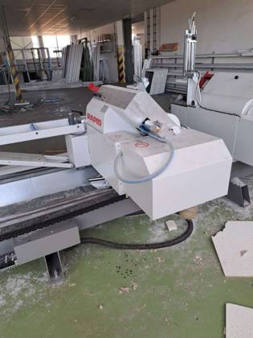
Actual photo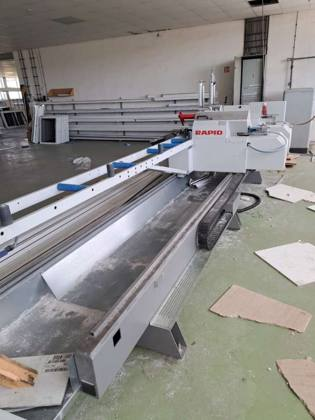
Actual photo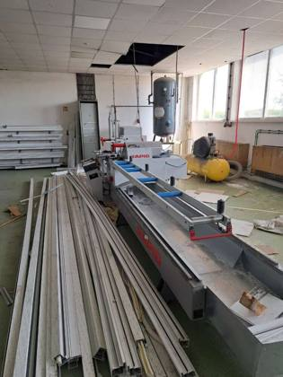
Actual photo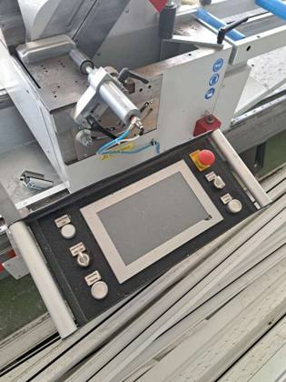
Actual photo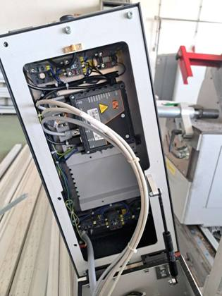
Actual photo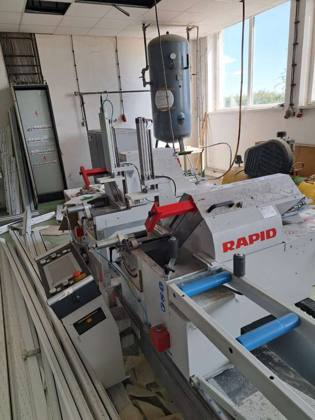
Product photoDouble mitre saw
RAPID DGL 250 – double mitre saw (2022)
Maker RAPID Maschinenbau (Germany), year 2022. Cuts PVC/aluminium profiles to length at both ends in one pass; 550 mm blades, 2,800 rpm, touch-screen control with motorised length positioning, 400 V, compressed air 6 bar. Nameplate weight 1,400 kg.
Est. weight ≈ 1.4–1.8 t
1 pcsRef #1
2 · Machining – CNC profile centre 1 items · 1 pcs
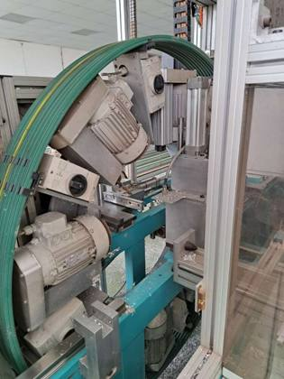
Actual photo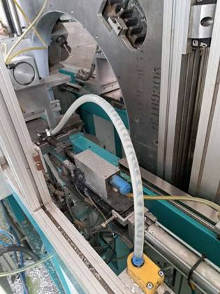
Actual photo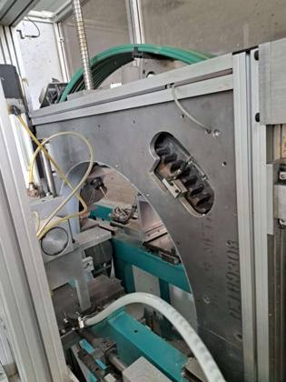
Actual photo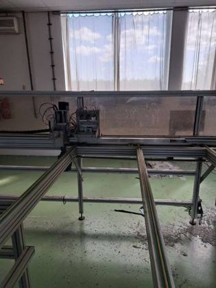
Actual photo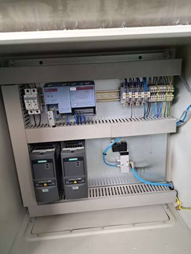
Actual photo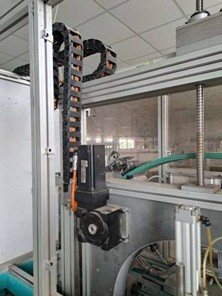
Product photoCNC profile machining centre
THORWESTEN PBZ-2 – CNC profile machining centre (2004)
Maker THORWESTEN Maschinenbau (Germany), year 2004. Drills and mills PVC profiles (hardware and lock slots, drainage, screw holes) with several spindle units on a rotating head; PC control with screen, infeed/outfeed roller tables, 400 V, 6 bar.
Est. weight ≈ 1.5–2.5 t
1 pcsRef #2
3 · Welding – two-head welder 1 items · 1 pcs
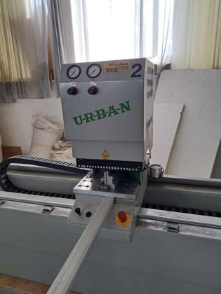
Actual photo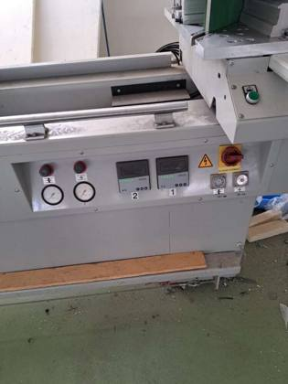
Actual photo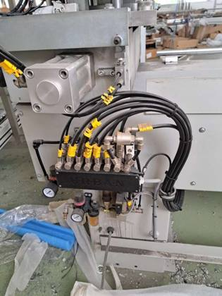
Actual photo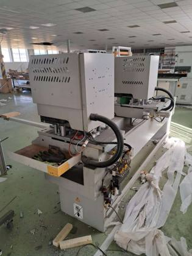
Actual photo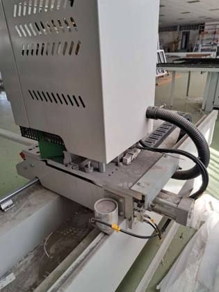
Actual photo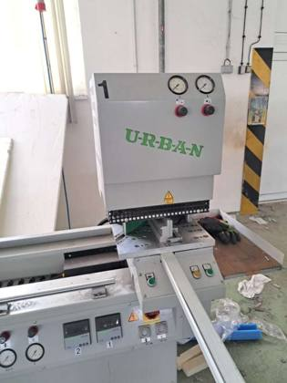
Product photoTwo-head PVC welding machine
URBAN AKS 3900 – two-head welding machine (2016)
Maker URBAN (Germany), year 2016. Welds the corners of PVC window and door frames and sashes; two welding heads (1 + 2), heated plates, pneumatic profile clamping, temperature controllers.
Est. weight ≈ 0.8–1.3 t
1 pcsRef #3
4 · Corner cleaning – CNC cleaner 1 items · 1 pcs
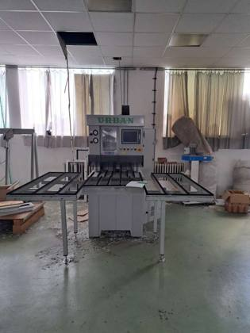
Actual photo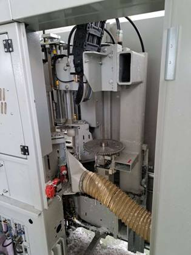
Actual photo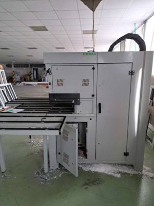
Actual photo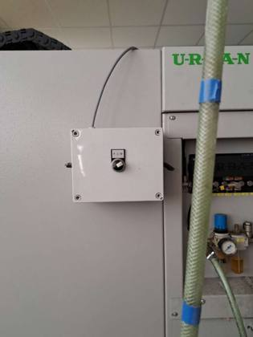
Actual photo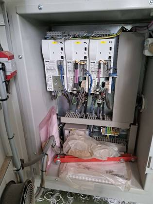
Actual photo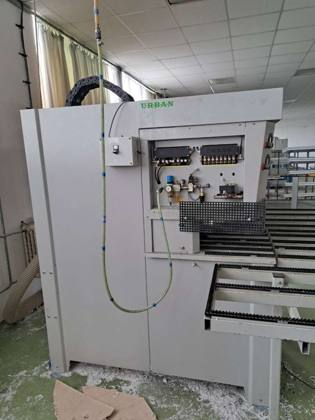
Product photoCNC corner cleaning machine
URBAN SV 405 – CNC corner cleaning machine (2017)
Maker URBAN (Germany), year 2017. Removes the weld seams on the corners of welded PVC frames (top, bottom and outside contours) with CNC-controlled tools; feeding tables included.
Est. weight ≈ 0.9–1.4 t
1 pcsRef #4
Summary of contents
By product type
| Product type | Items | Quantity (pcs) | Share | Est. weight |
|---|---|---|---|---|
| Double mitre saw | 1 | 1 | 25.0% | ≈ 1.4–1.8 t |
| CNC profile machining centre | 1 | 1 | 25.0% | ≈ 1.5–2.5 t |
| Two-head PVC welding machine | 1 | 1 | 25.0% | ≈ 0.8–1.3 t |
| CNC corner cleaning machine | 1 | 1 | 25.0% | ≈ 0.9–1.4 t |
| Total | 4 | 4 | 100% | ≈ 4.6–7.0 t |
By process step
| Process step | Items | Quantity (pcs) | Share | Est. weight |
|---|---|---|---|---|
| 1 · Cutting – double mitre saw | 1 | 1 | 25.0% | ≈ 1.4–1.8 t |
| 2 · Machining – CNC profile centre | 1 | 1 | 25.0% | ≈ 1.5–2.5 t |
| 3 · Welding – two-head welder | 1 | 1 | 25.0% | ≈ 0.8–1.3 t |
| 4 · Corner cleaning – CNC cleaner | 1 | 1 | 25.0% | ≈ 0.9–1.4 t |
| Total | 4 | 4 | 100% | ≈ 4.6–7.0 t |
Shipping estimate
| Total volume (approx.) | ≈ 35–60 m³ |
| Total weight (approx.) | ≈ 5–7 t |
| 40′ High Cube containers | 1 |
Approximate: weights per machine are estimates (saw 1,400 kg per nameplate), the total is the sum of the lines. The saw bed and the roller tables are longer than a 20′ container, so 40′ HC only; depending on how the tables are dismantled and packed, 1–2 × 40′ HC. Forklift/crane loading needed.
Container capacity used: 40′ HC ≈ 68 m³ / 26.5 t, 20′ ≈ 28 m³ / 24 t (practical loading).
Container capacity used: 40′ HC ≈ 68 m³ / 26.5 t, 20′ ≈ 28 m³ / 24 t (practical loading).